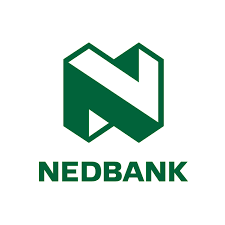
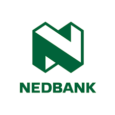

- Synchronous, where everyone interacts in real time, as in online meetings, through instant messaging, or via Skype, and
- Asynchronous, where the interaction can be time-shifted, as when uploading documents or annotations to shared workspaces, or making contributions to a wiki
Business Collaboration
What is Collaboration
Business fundings
2. Offer Value. Sponsorships come in many forms, including:
- Sponsored posts from the corporation on your blog
- Giveaways of their products to your audience
- Product reviews
- Advertising
- Events
3. Write a compelling proposal that makes it clear why a corporation should sponsor your business.You want to write a story about you or your business that is exciting and meaningful. Don’t simply state what you sell; explain why you impact lives. Remember, sponsorships are not just about your business: the company you want to partner with will want to know what’s in it for them. How will the company reap benefits it wouldn’t otherwise get?
See more:
Support Programme for Industrial InnovationCapital Projects Feasibility Programme
Business Loans
- Start by ensuring your house is in order. Make sure you have comprehensive records and documentation that shows your business has been profitable for a period of time, that your credit record is clean, and that you have collateral to borrow against.
- Make sure you have a sound business plan that you have written and understand, complete with financial records and projections to discuss with the bank.
- Have your financial statements ready, be able to detail how much money is needed and for what purpose, and foster a good track record with your bank before asking for a loan. If you’re in a good position to get a loan, shop around to see which bank can offer you the best loan terms.
Apply For a loan:
 
